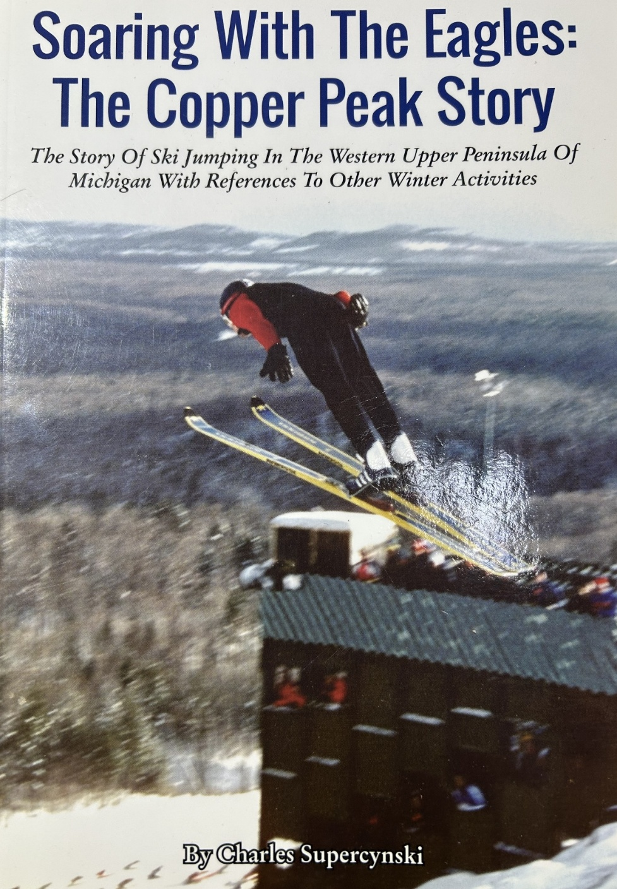
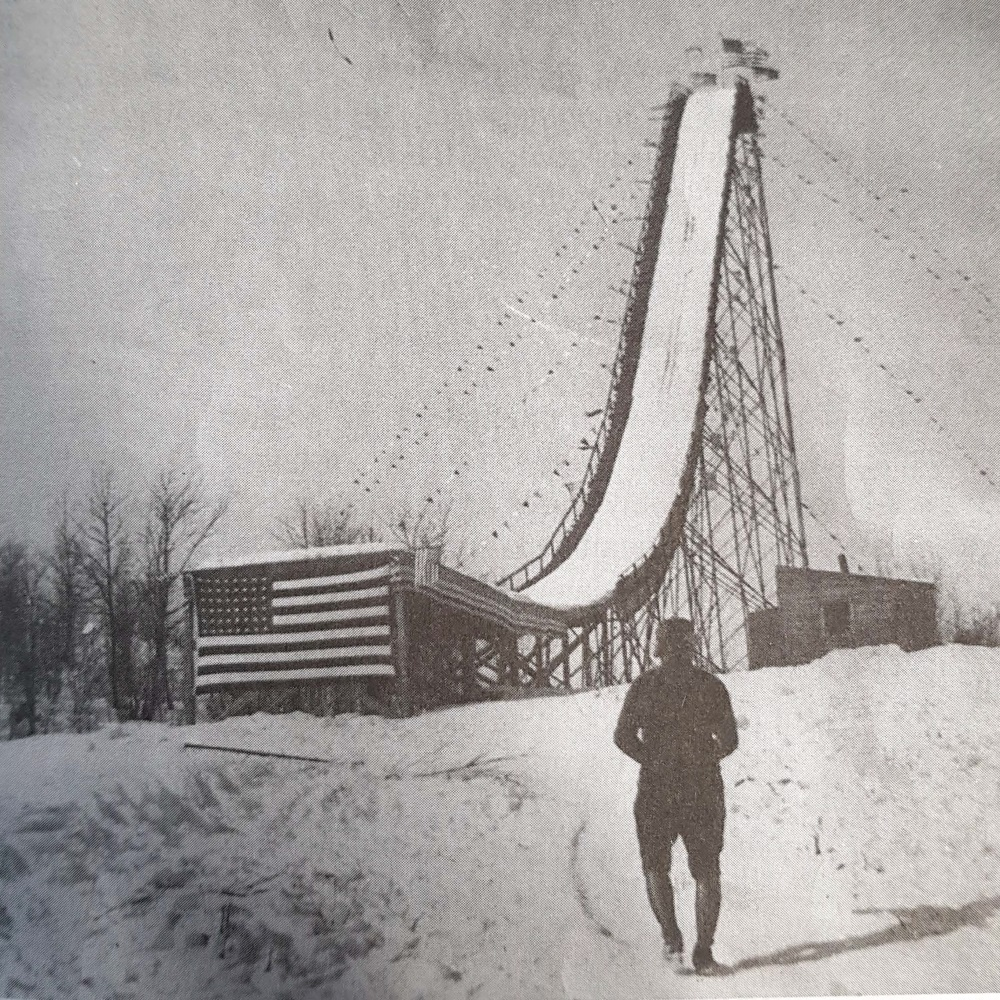
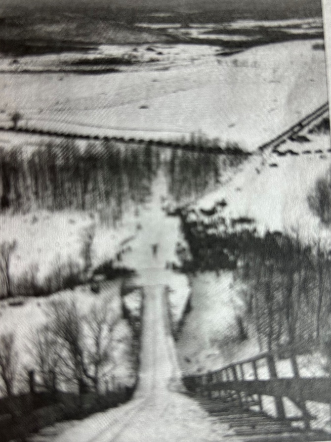
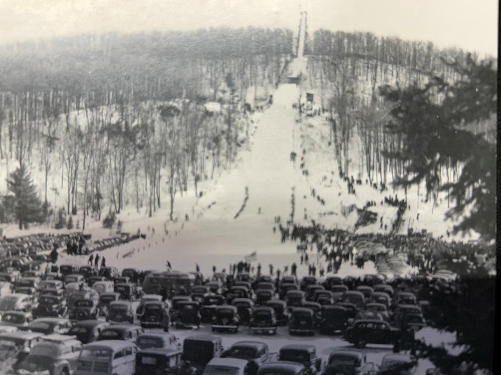

2 Introduction
2.1 Foreword
Ski jumping holds a special place in the hearts of Yoopers and European heritage alike. As sketched here, the experiences of a junior class ski jumper in the 1970’s Ironwood, Michigan area should resonate with other ski jumpers, especially from that era. For those engaged in ski jumping after the 70’s era, may it trigger an ‘aha’ moment.
For my family, it provides an understanding and appreciation of our Dad (or Grampa or Great Grampa) whom they never really had the opportunity to get to know. Also, this account pays homage to the many that steadfastly and sacrificially supported this sport, especially during the 70’s and 80’s time period, led by those of the so-named ‘The Greatest Generation’, and their successors, the ‘Silent Generation’.
In the latter pages of this article, a few personal viewpoints are expressed on the evolution and future of ski jumping. Retiring from ski jumping over four decades ago provides a ‘Rip Van Winkle’ moment to compare and contrast ski jumping for the 50 years difference between the 1970’s and today. I also promote how this sport could be embraced on a wider scale. A few of the progressive U.S. ski jumping organizations that have adopted a promising, comprehensive model are mentioned.
This journal should not exhibit symptoms of the Lake Wobegone Effect. What is the Lake Wobegone Effect, you ask? Stemming from Garrison Keillor’s fictional small town of Lake Wobegone “where all children are above average”, it is the narcissistic tendency to overestimate one’s own accomplishments, despite what is found in documented history.
This memoir does not pretend to be a comprehensive review of the sport of ski jumping. To color in the long history of ski jumping in the upper Midwest and specifically, the Gogebic Range of Michigan’s western Upper Peninsula, I’d point you to Charlie Supercynski’s ‘Soaring With the Eagles’ (1) as an engaging and thorough account. Besides my personal detail and anecdotes, some perspectives expressed here are parallel to what Charlie captured, even though he and I traveled distinctly different paths.

Past and present ski jumping generations are increasingly recognizing the value of creating archives and historical accounts of this wonderful sport. There are several books and electronic caches containing the history and culture of ski jumping that can be discovered with a bit of internet searching. Understandably, such publications usually focus on a particular region. Further appreciation of the long history of skiing can be gained by venturing to the U.S. National Ski Hall of Fame in Ishpeming.
For more personal perspectives, an outpouring of anecdotes and remembrances are being collected via the US Ski Jumping Story Project. Heartwarming insights and greater appreciation of what it takes to be a ski jumper are shared. It illuminates how much others have given to, or have gained from, the sport. Many others have participated in ski jumping longer than my relatively short (14 year) stint, so there must still be a treasure trove of stories waiting to be revealed.
Besides the title, the word Yooper is periodically exercised in this journal. Surprisingly, not all Michiganders (not Michiganians!) know that a Yooper is someone born (or in a less pure definition, resides) in the Upper Peninsula (aka U.P.) of Michigan. Broad use of the word Yooper is not that ancient. Its original publication was as late as August 5, 1979 when the Escanaba Daily Press hosted a public competition to propose a word to best refer to the U.P. people. It can be found today in the Merriam-Webster dictionary.
Unless otherwise noted or obvious in context, several words are used interchangeably, such as ski jumper, jumper, or skier and hill, jump, or ski jump.
Several American cultural references from the 70’s and 80’s are also sprinkled into the text. For those not born during or before those decades, a follow-up with your favorite electronic device may arm you for your next trivia night.
2.2 Heroes of Yore
Across the span of sports in which I have participated, ski jumping was by far the most fulfilling. In the late 1990’s, nearly 20 years after my last jump, I would still literally dream about gliding through the air to the bottom of the jumping hill.
I find that a majority of sports minded youngsters typically adopt their favorite sport, team, and athlete(s) between the ages 9 - 11. As a young left-handed baseball player, I tried to emulate Norm Cash and Mickey Lolich. I debated with a wayward thinking cousin who adamantly claimed that Denny McLain was better than Mickey. McClain was just coming off two monster Cy Young years (31 wins in 1968 and 24 wins in 1969), he only won another 21 games for the rest of his career, plagued by arm injuries and self-induced trouble. Meanwhile, the rubber armed Mickey was the 1968 three-game winning World Series hero who sustained success deep into the 70’s, thus settling that debate conclusively. But, I digress.
In ski jumping, Jerry Martin was the hero of the time. He was at the pinnacle of his achievements in the early to mid-70’s. A personable and stylish jumper, Olympian in 1972 and 1976, and U.S. national ski jumping champion in 1971, 1973, and 1975, we witnessed his triumphs at the local Copper Peak ski flying hill. He sandwiched 1st places in 1973 and 1975 around a 2nd place in 1974, while extending the hill record each year. On his way to the 1973 U.S. National championship at Suicide Hill in Ishpeming, Michigan, Jerry was in perfect Daescher* flight form.
What knocked it out of the park for me was that prior to these achievements, in September 1971, he permanently lost his right eye to an industrial accident. Amazingly, he overcame that deficit in depth perception, a critical ability in a high speed airborne sport covering long distances and changes of elevation over a sometimes difficult to distinguish terrain.

Daescher – the predominant flight style from the late 1950’s until late-1980’s, illustrated by skis parallel and close together and the ski jumper’s torso bent slightly forward, with arms close or touching at the hips. It may also be noted that goggles were not popular and helmets were yet to be introduced to the sport.
2.3 Section 12 Legacy
Our dad, Wilbert (Willie) Savonen, was born and raised on a modest 40 acre dairy farm along Section 12 Road in Ironwood Township, along with brothers Toivo (Toyk) and Elmer and sister Helen. John (Juho) Savonen, wife Hilda, and their 6 year old son Onni (Willie’s father) emigrated to the U.S. from Finland in 1909 having already lost an infant and a toddler to disease, reflecting rampant mortality rates of the time. Fortunately, the family elected to escape their homeland before rising political turmoil escalated into civil war a few years later.
Finnish was the primary language at the Ironwood Township home. It was not unusual in a first generation family in the U.S. that conversational English was not learned until reaching school age. So, in addition to an accent, there was a special flavor as to how words were pronounced. For Dad and his generation, it was natural for the ‘h’ to be silent in the ‘th’ combination, and a ‘j’ sounded like ‘y’, as it is today across broad swaths of Europe. As such, the pronunciation of the common given name Juho was ‘yoo hoe’. A sample Dad expression, when he intentionally embellished it, would be “Da troot ist dat skee yumping is a trill.”
Dad also had the tendency to speak a few malaprops, and some were not by design. When encountering stubbornly rusted bolts in a backyard repair job one day with his 11 year-old son (me) at his side, he impatiently directed “Go get the profane torch”. After a moment’s pause, we realized what had been said, and shared a hearty laugh. Actually, the word fit his moment of frustration.
For a small dairy farm to remain operational, repair ingenuity was a necessary skill for the Savonen boys. As a practical, hardscrabble solution, hay bale wire kept many of the farm implements functioning until a more thorough and durable repair was possible, even if the initial repair was neither aesthetic nor found in repair manuals (that often didn’t exist).
Willie and older brother Toyk were always outside. The Savonen dairy farmhouse was perched on a rise overlooking idyllic Siemens Creek that bisected the property. They fished for brook trout and raised extra cash by trapping muskrat along its banks. Strenuous farm chores didn’t quell enthusiasm for sports when time permitted. Whenever possible, they rounded up the neighborhood boys to play ‘unorganized’ baseball. Even though the neighborhood consisted of miles between bustling farms and party line phones, youngsters gathered to play ball for hours without requiring adult presence or organizational oversight. The baseball field for them was the local gravel pit where bad hop ground balls were an inherent part of the game, and not shying away from the erratic bounce was a measure of toughness.
In the U.P. snow belt winter, skiing was the favored pastime. Alpine skiing (or downhill as it is often called) was ‘nice’, but the local alpine ski hill industry was small scale in the 40’s and 50’s. Mount Zion ski hill ski was more than four miles from the Savonen homestead and lift tickets cost money (OK, but a nickel was still real money in ‘does’ times). And even though both cross country skiing and ski jumping had already appeared in the 1924 France Olympics, local ski touring was a novelty and groomed trails were only a concept.
As Supercynski (1) documents so well, ski jumping reigned as the preeminent local sport of the early 20th century. Ski jumps of all sizes and shapes could be found in so many of the hilly neighborhoods across the U.P. The Ironwood Ski Club formed in 1905 and built the 40m* Curry Ski Hill ski jump. In the ski jumping community, Curry Hill was famous, with the ski jumping world record of 152 feet set in 1911 by Anders Haugen and extended to 169 feet in 1913 by Ragnar Omtvedt. Later that year, a severe wind storm knocked down its wooden scaffold. Rebuilt in 1923, its steep and slender steel girder construction relied on a web of guy wires to stay upright. Not to blithely assert that ski jump design standards were lax, but it was not unusual that ski jumping scaffolds met their demise in high winds, as was Curry Hill’s fate a second time during a 1930 storm. Rumors persist to this day that vandals cut the guy wires, thus guaranteeing its doom. Actually, all 11 ski jumping scaffolds constructed in the region by one particular Chicago company collapsed or fell prey to high winds and storms in the 1920’s and 30’s. (1).
*40m – in simple terms, (m) denotes the nominal jumping distance (in meters), as designed for the hill.

So in 1935, the Ironwood Ski Club built the 50m Wolverine ski jump in Ironwood Township. It soon hosted one of the more prominent annual tournaments in the national ski jumping scene. Wolverine was built on a ridge enabling jumps in excess of 200 feet. However, the sideshow of pursuing the world distance record (which exceeded 300 feet by 1935) was now the domain of larger international hills. Nevertheless, Wolverine ski jumping tournaments were a spectacle, attracting patrons from across the upper Midwest region who wanted to see intrepid heroes of skill and daring soar (very) high through the air, if not tumble to the bottom.



Among the ski jumping legends that Dad described to me, the exploits of Norwegian immigrant Torger Tokle were prominent. Tokle set the Wolverine hill record of 216 feet in 1942. National newspaper articles were calling him the “Babe Ruth of Skiing” (5). In a 4-year span (1939 – 1943) after migrating to the U.S., Tokle entered 44 tournaments and won 39 of them. Ultimately, Torger’s heroism was immortalized when he joined the U.S. Army and died in a 1945 World War II battle.
As indication of the Norwegian passion for skiing, all twenty of his siblings skied and two of his brothers (Kyrre and Art) eventually migrated to the U.S., becoming established ski jumpers and coaches in their own right. If marketing had been more sophisticated in that era, a prized pair of new jumping skis would have been advertised as Air Tokles, some 65 years prior to Air Jordans.
Since Wolverine was less than a mile as the pheasant flies from the Savonen farm, I imagine preteens Willie and Toyk enthralled while watching local ski jumping heroes like Ted Zoberski performing in their own backyard. In their teens and early twenties, Willie and Toyk regularly rode Wolverine, with Toyk competing in the official tournaments. At 5 foot 7 and 130 or so pounds, the Savonen boys were farm boy tough, wiry, and quick as snot, a physique that ironically served as the prototype for ski jumpers in the 21st century, rather than 1950.

After a day of jumping at Wolverine, they ski toured across the neighbors’ farm fields to get back to the lower lying Savonen dairy farm homestead. If the snow was old and crusty, they glided effortlessly over the top of it with their heavy, stiff hickory skis.
Even though traveling long distances in the dead of an upper Midwest winter in a 1930’s or 1940’s automobile could be a precarious undertaking, the crowd size at Wolverine and other prominent ski jumping venues like Suicide Hill in Ishpeming routinely numbered in the thousands. Numerous vendors capitalized on the community event by selling culturally specific cuisine (with ketchup, of course!).
Alas in 1963, the Wolverine ski hill scaffold was partially destroyed. Yeah, you guessed it. The culprit was a severe wind storm. A partially reconstructed inrun ramp enabled periodic use of a scaled down Wolverine during the 1965 - 1968 timeframe for practice and local or unsanctioned competitions (2).
2.4 Slab Riders
Fast forward to the mid-1960’s, Willie and wife Shirley (Mom) are raising daughter (Wendy) and younger son (me). My first ski ride was on my father’s shoulders while he glided down the gentle 10 foot slope from our Ironwood Aurora Location house to the Richards’ yard next door. For that occasion or when going to Mt. Joy in Wakefield, Dad brushed on layers of pungent smelling shellac and rubbed paraffin wax of the appropriate color for that day’s snow conditions onto his three groove hickory jumping skis. Somewhere in the basement, he found and dusted off his low-cut leather jumping boots that hadn’t regularly seen snow in over a decade.
In contemporary terms, a slab rider is someone that is part of a culture that creates customized vehicles known as slabs. In the broader skiing world, a slab rider is a backcountry skier who may find themselves on top of an unstable slab of snow that could trigger an avalanche and lead to their untimely demise. But for local Yoopers, slab rider was a simpler, but less than complimentary moniker applied by non-skiers to all alpine skiers and their wooden slabs.
The initial love of slab riding for Wendy and myself got legs (and skis, of course) when our parents scrounged up money for the less expensive local alpine ski hills, such as Eagle Bluff (Hurley), Mt. Zion (Ironwood), and occasionally Whitecap (Upson). It was a treat when we were dropped off for three hours of Wednesday or Saturday night skiing at Big Powderhorn Mountain. The occasional splurge was a full Saturday’s worth of skiing.
At Powderhorn, the technique for using the bunny hill rope tow was not intuitive for this 7 year-old. After a few face plants and near tears, I eventually mastered it by gradually, not suddenly, tightening my grip on the moving rope. After bearing with snide comments by a rich bunny hill brat about my cheap and undersized ski equipment and persuaded by big sister Wendy waving gleefully and proudly from the chair lift overhead, I was motivated to graduate. When venturing to the top of 600 vertical foot Big Powderhorn Mountain, I realized that although the ski runs were much longer, most hill sections were not steeper nor more difficult than the steepest part of the bunny hill. It was an early lesson to maintain poise and confidence while graduating step by step to ever larger ski jumps.
Even though it was an alpine ski area, we’d tend to ski off trail, dodge trees, and create small kickers (small jumps with an upward ramp) on the side of the main trail to practice rudimentary acrobatics. By the way, when propelled vertically by a kicker and landing a short distance further on flat ground, the impact is far greater than landing after flying several hundred feet on any well designed ski jump hill.
Anyway, these antics paled in comparison to the somersaulting stunts of off-trail hotshots with last names like Noren and Bertini in full view of chair lift riders overhead. At that time, only a few could admire the radical skills of these predecessors of free style skiing which now attracts national and Olympic attention. Fun-killing ski patrollers would eventually come along, and in the name of safety, rope off ungroomed trail sections or have youth-made bumps eradicated by the hill groomers.
When we weren’t obeying signs posted along the runs, we sought additional excitement. On a clear, dark night, a ride up the chair lift offered the opportunity to check for the Northern Lights, name the constellations, and watch for a shooting star or high-flying jet. To keep our adrenaline pumping, and on a whim under the cloak of darkness, we would contort ourselves to swap positions on the two-seater chair lift while dangling 30 feet above the ground. Why? I don’t know. Because it was daring and a challenge.
Yet, the sibling standard for adventurous thrill seeking was pioneered by my sister (in her younger days). She boldly jumped off the Powderhorn chair lift one evening, as if it was a typical thing to do. As with some daredevil acts, the actual risk is often less than the risk perceived by non-participating observers. She jumped from a negotiable height into deep snow after removing her skis.
Later, she trumped that adventure by somehow navigating her way to the very top of the monstrous Copper Peak ski flying hill scaffold while it was still in the finishing stages of construction. Chain link enclosures protecting the open-air walkways were not yet in place. I wouldn’t hazard to do that then or now, and I’m supposed to be the risk-taking ski jumper of the family.